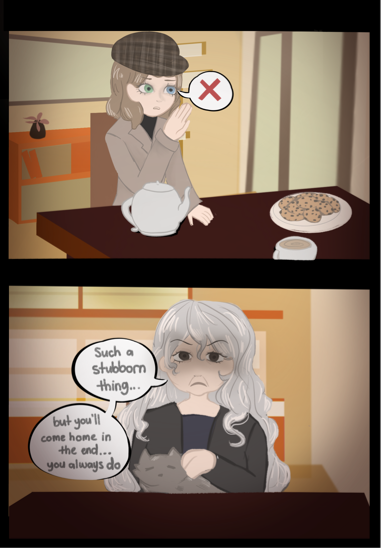

You contemplate if it's worth staying longer, but conclude you don't have time to stay. You thank her for the hospitality but decline her offer, stating a lack of interest in tea. You notice her expression sour before resurfacing a calming smile. The unease settles in your stomach, but still you feel a twinge of guilt for leaving. However, with all the time you’ve spent here, you've still learned nothing new about the possible whereabouts of the missing people. Maybe you should search beyond the forest.

She continues to insist when you decline her offer and begin to make your way towards the door, but then she mutters something in a low tone. The old lady chants quiet whispers in a language you don't recognize, but soon enough she gets louder, faster, and then a shudder runs through your body; your vision blurring. What's happening? You want to turn back and confront her, but your knees collapse from underneath before you can speak. As your mind fades into unconsciousness, her words echo in your mind: